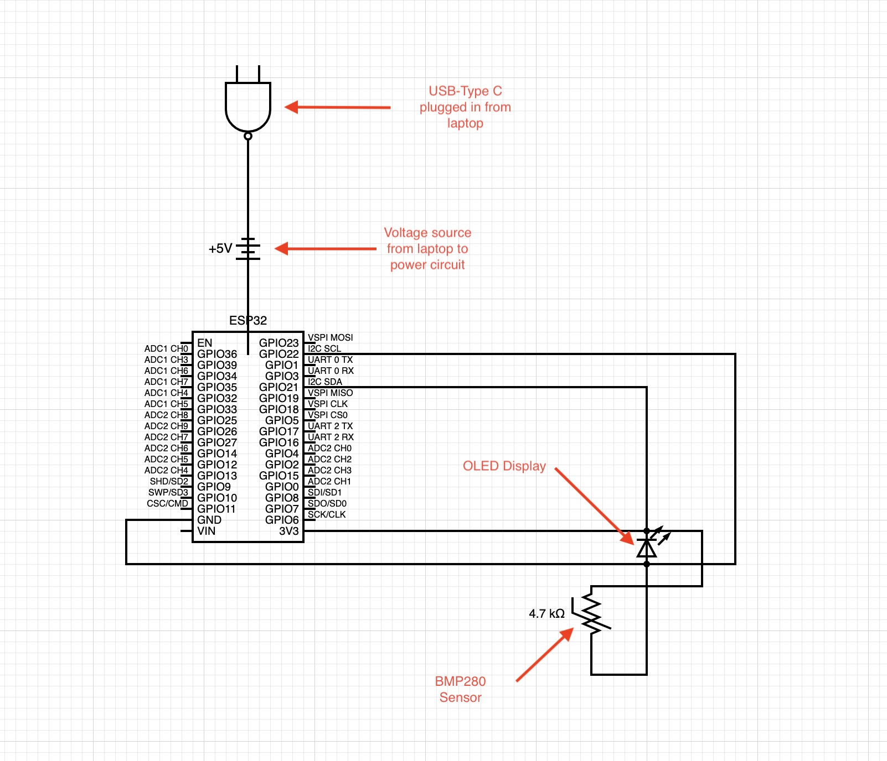

<div class="textcontainer">
<p class="margin"> </p>
<h3>Week 2.2: Microcontroller Programming</h3>
<h4>Temperature and Pressure Sensor Displayed on OLED</h4>
Since the final project is gradually approaching, I decided to slowly begin dedicated the weekly assignments toward the theme of my preferred final project—the biological incubcator. As a result, I created an essential component to incubator which is the temperature, pressure, and humidity sensor. However, since the lab only had the BMP 280, and not the BME 280, only the temperature and pressure were able to be read. Furthermore, I portrayed the results on an OLED display since this is standard on medical devices for data to be displayed on readily available monitors.
<br></br>
After installing the BMP 280 and downloading several libraries, I ran a sensor test to confirm whether or not the BMP 280 was installed properly. Below are the results of the test code which show a temperature that is connected to an external database.
<br></br>
<p class="margin"> </p>
<div class="center-colum">
<br></br>
Below is an image of my circuit setup when testing the example code.
<p class="margin"> </p>
<div class="center-colum">
<br></br>
Along with a video of the test display.
<video controls>
<source src="displaytest.mp4" type="video/mp4" size="200">
</video>
<br></br>
Below is an image of the final display setting with minor customization that includes my name.
<p class="margin"> </p>
<div class="center-colum">
<br></br>
Here is the labeled code that I used to intergrate the BMP 280 with the OLED. The "<"">" were taken out from the #include portion due to HTML mistaking it for a function and hiding the library text.
<pre><code class="language-arduino">
#include Wire.h
#include Adafruit_GFX.h
#include Adafruit_SSD1306.h
#include Adafruit_Sensor.h
#include Adafruit_BMP280.h
#define SCREEN_WIDTH 128
#define SCREEN_HEIGHT 64
#define OLED_RESET -1
//Initialize the display and sensor
Adafruit_SSD1306 display(SCREEN_WIDTH, SCREEN_HEIGHT, &Wire, OLED_RESET);
Adafruit_BMP280 bmp;
void setup() {
Serial.begin(115200);
//Initialize I2C Display with specific SDA (21) and SCL (22) pins
Wire.begin(21, 22);
//Initialize OLED Display
if(!display.begin(SSD1306_SWITCHCAPVCC, 0x3c)){
Serial.println(F("SSD1306 allocation failed"));
for(;;);
}
//Initialize BMP280 sensor
if(!bmp.begin(0x76)){ //Try 0x77 if not 0x76
Serial.println(F("Could not find a valid BMP280 sensor, check wiring"));
while(1);
}
//Clear display buffer
display.clearDisplay();
display.display();
}
void loop() {
// Read sensor data
float temperature = bmp.readTemperature();
float pressure = bmp.readPressure() / 100.0F;
//Clear display buffer
display.clearDisplay();
//Header text size
display.setTextSize(2);
display.setTextColor(SSD1306_WHITE);
display.setCursor(20, 0);
display.println("Adrian Baginski");
//Text size for Temp display
display.setTextSize(1);
display.setCursor(5, 20);
display.print("Temp: ");
display.print(temperature, 1);
display.println(" C");
//Text size for Pressure display
display.setCursor(5, 40);
display.print("Pressure: ");
display.print(pressure, 1);
display.println(" hPa");
display.display();
delay(2000);
}
}
</code></pre>
<br></br>
Below is a diagram of how I set up the circuit to function. The steps include: (1) Connceting the ESP32 Dev board to the breadboard via USB-Type C wire from my laptop, as well as connecting the OLED and BMP280 to the breadboard; (2) Wiring the 3.3 V, Ground pins, and SCL/SDA pins from the ESP32 Dev board to the OLED display; (3) Connecting the BMP280 Voltage, Ground, and SCL/SDA pins to the OLED display in order to integrate both components; and (4) Write the code that integrates the both components from a software standpoint.
<p class="margin"> </p>
<div class="center-colum">

<br></br>
</div>